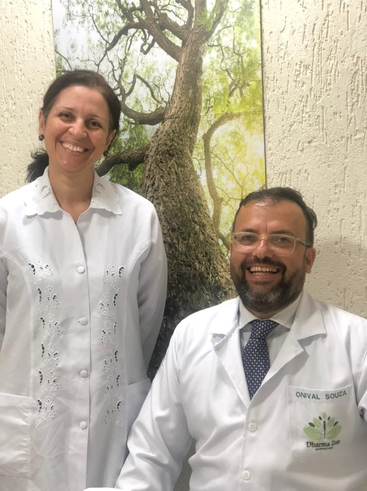

La medicina china Dharma Zen tiene como objetivo ofrecer medios alternativos para la prevención y el tratamiento de cientos de enfermedades a través de la medicina tradicional y milenaria china, como la acupuntura, la moxibustión, la auriculoterapia, el masaje tui-ná, entre otras técnicas.
ONIVAL y Silvia (Esposo y Esposa) Poseen Medicina China Dharma Zen. Onival tiene formación en shiatsu, acupuntura y diagnóstico avanzado en medicina china, mientras que Silvia tiene formación en masoterapia.
